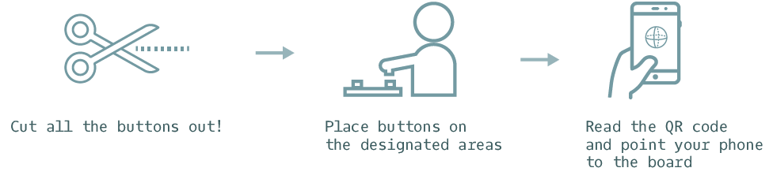

Do-It-Yourself Visualization (DIY Viz) is a multimedia data exploration tool combining augmented reality with tangible interaction. The installation consists of two parts: (1) tangible components; boards and buttons and (2) an augmented reality application. By interacting with tangible components, users create virtual 3D models on their phone camera. Through experimenting with different mediums and interaction models, this project presents a novel way to create data visualization.
